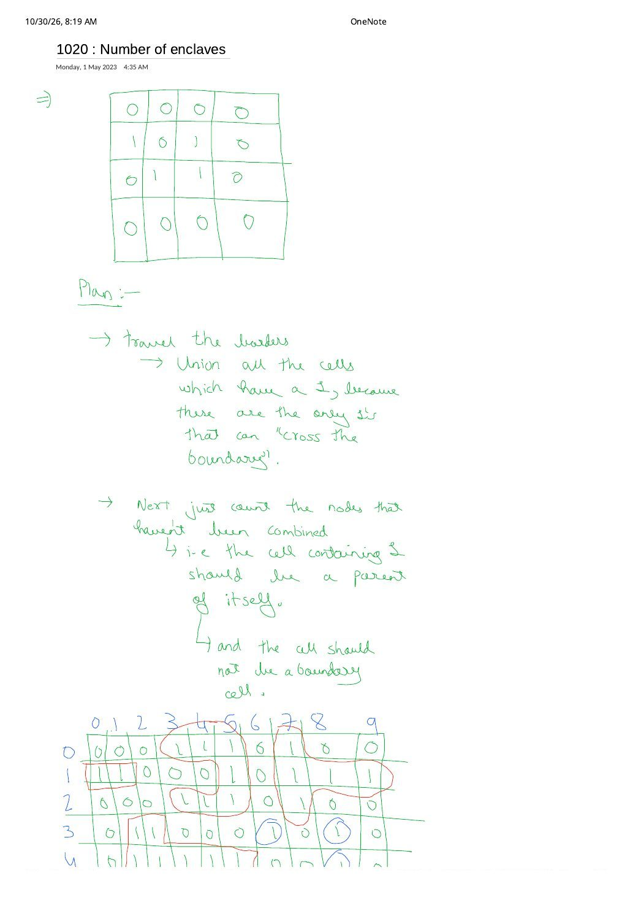
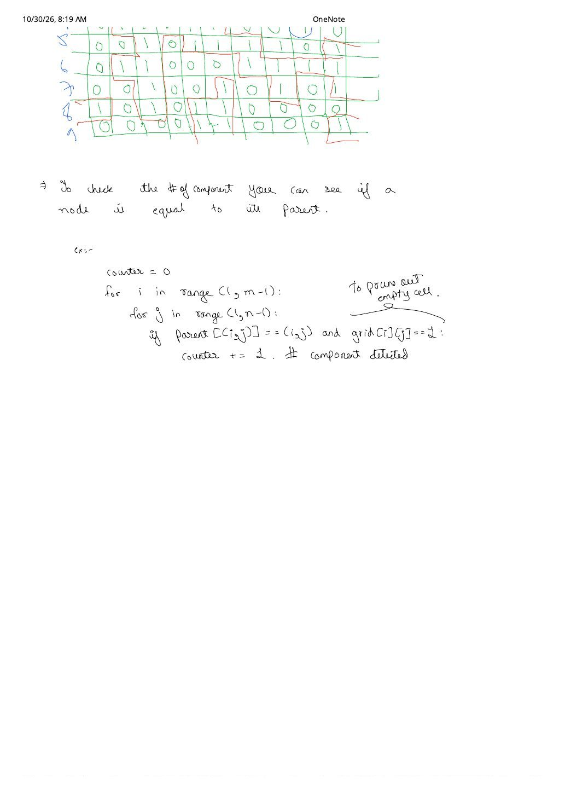

LC 1020: Number of Enclaves — Boundary Union, Virtual Dummy Node & Cell-vs-Component Pitfalls
Expanded from handwritten competitive coding study note: 03_1020_Number_of_enclaves.pdf (Pages 1–2, dated May 1, 2023) · View original handwritten pages
1. Problem Statement
You are given an $m \times n$ binary matrix grid where 0 represents a sea cell and 1 represents a land cell ($1 \le m, n \le 500$). A move consists of walking from one land cell to an adjacent (4-directional) land cell or walking off the boundary of the grid. Return the number of land cells in grid for which we cannot walk off the boundary in any number of moves.
2. Core Intuition: Collapsing the Entire Border into a Virtual Dummy Node
As written in the handwritten Plan on Page 1: the only 1s capable of crossing the boundary are connected components that touch at least one border cell ($i \in \{0, m - 1\}$ or $j \in \{0, n - 1\}$). Any interior land component completely surrounded by 0s is trapped—an enclave.
How do we model "can reach any border cell" cleanly in Disjoint Set Union without checking $2(m + n)$ boundary cells for every query? Introduce a single virtual dummy vertex at index $\text{BORDER} = m \cdot n$:
- Allocate DSU of size $m \cdot n + 1$ ($0 \dots mn - 1$ for grid cells, plus node $m \cdot n$ representing "off the grid").
- Whenever $(i, j)$ is a land cell (
grid[i][j] == 1):- If $(i, j)$ lies on any of the 4 outer edges ($i = 0$, $i = m - 1$, $j = 0$, or $j = n - 1$), call
unite(id(i, j), BORDER). - Union $(i, j)$ with its Top $(i - 1, j)$ and Left $(i, j - 1)$ land neighbors (using the 2-direction raster scan from Note 02).
- If $(i, j)$ lies on any of the 4 outer edges ($i = 0$, $i = m - 1$, $j = 0$, or $j = n - 1$), call
- After one pass, every land cell able to escape the boundary shares the exact same ultimate root as
BORDER! Every interior land cell with $\text{findPar}(\text{id}(i, j)) \ne \text{findPar}(\text{BORDER})$ is an enclave cell.
03_1020_Number_of_enclaves.pdf: Red border cell (1, 0) unites with BORDER; green interior cluster {(1,2), (2,1), (2,2)} forms 1 enclave component containing 3 trapped land cells.3. Dissecting the Handwritten Note's 10×10 Trace & Page 2 Snippet
Across the bottom of Page 1 and top of Page 2, the handwritten note traces a large $10 \times 10$ binary matrix—outlining boundary-escaping corridors in red ink and circling isolated interior 1s like $(3, 6)$ and $(3, 8)$ in blue ink—followed by this Page 2 Python snippet:
# Original snippet from Page 2 of 03_1020_Number_of_enclaves.pdf:
counter = 0
for i in range(1, m - 1):
for j in range(1, n - 1):
if parent[(i, j)] == (i, j) and grid[i][j] == 1: # To prune out empty cell.
counter += 1 # component detectedThree Critical Subtleties When Turning the Page 2 Snippet into Accepted Code
- Enclave Cells (LC 1020) vs. Closed Island Components (LC 1254): Notice the comment
# component detected! When a 3-cell interior enclave like $\{(1,2), (2,1), (2,2)\}$ merges together, only one of the three cells remains a self-root ($\text{findPar}(x) == x$). Counting non-border self-roots counts how many disconnected enclaves exist ($1$), whereas LC 1020 asks for the total number of trapped land cells ($3$). To get total cells, either:- Increment
enclaves += 1for every interior land cell withfindPar(x) != findPar(BORDER), or - Add
enclaves += sz[x]at each non-border rootfindPar(x) == x!
- Increment
- Border component whose root happens to sit in the interior: If union-by-size attaches a smaller border cell under a larger interior cluster's root $r$, then $r$ lies inside
range(1, m - 1)and still satisfiesfindPar(r) == r! Uniting all border1s with the virtualBORDERnode (or forcingBORDERto always be root) and checkingfindPar(x) != findPar(BORDER)prevents counting an escaping component whose root landed indoors. - Always call
findPar(x), never rawparent[x]: Path compression is lazy—if cell $A$ pointed to $B$ before $B$ united withBORDER,parent[A]still holds $B$ untilfindPar(A)unwinds and compresses it!
Also notice the helpful annotation on Page 2: "To prune out empty cell" on grid[i][j] == 1. Because water cells (0) are initialized with parent[x] = x and never participate in unions, omitting grid[i][j] == 1 would falsely count every interior sea cell as an unmerged enclave!
4. Brute $\to$ Better $\to$ Optimal Progression
| Approach | Time | Space | Key Idea |
|---|---|---|---|
| Brute Per-Cell DFS/BFS | $\mathcal{O}((mn)^2)$ | $\mathcal{O}(mn)$ | Run a fresh BFS from every 1 cell to test if it reaches the border; TLE on $500 \times 500$ grids. |
| Multi-Source Border Flood-Fill | $\mathcal{O}(mn)$ | $\mathcal{O}(mn)$ | Start BFS/DFS simultaneously from all border 1s, mark reachable land as 0, then count remaining 1s. |
| Virtual-Border DSU | $\mathcal{O}(mn \cdot \alpha(mn))$ | $\mathcal{O}(mn)$ | Non-destructive (leaves grid untouched), no recursion stack risk, and simultaneously answers both LC 1020 (enclave cell count) and LC 1254 (closed island component count)! |
5. Clean C++ & Python Implementations
Here is the optimal 1D-flattened C++ solution using the virtual BORDER = m * n node, plus a one-line subtraction trick using sz[findPar(BORDER)]:
#include <bits/stdc++.h>
using namespace std;
class Solution {
public:
int numEnclaves(vector<vector<int>>& grid) {
int m = grid.size(), n = grid[0].size();
int BORDER = m * n; // Virtual dummy node representing "off the boundary"
vector<int> parent(m * n + 1), sz(m * n + 1, 1);
iota(parent.begin(), parent.end(), 0);
auto findPar = [&](auto& self, int x) -> int {
return parent[x] == x ? x : parent[x] = self(self, parent[x]);
};
auto unite = [&](int u, int v) {
int pu = findPar(findPar, u), pv = findPar(findPar, v);
if (pu == pv) return;
if (sz[pu] < sz[pv]) swap(pu, pv);
parent[pv] = pu;
sz[pu] += sz[pv];
};
int totalLand = 0;
for (int i = 0; i < m; ++i) {
for (int j = 0; j < n; ++j) {
if (grid[i][j] == 0) continue; // Prune empty sea cells!
++totalLand;
int cur = i * n + j;
if (i == 0 || i == m - 1 || j == 0 || j == n - 1) {
unite(cur, BORDER);
}
if (i > 0 && grid[i - 1][j] == 1) unite(cur, (i - 1) * n + j);
if (j > 0 && grid[i][j - 1] == 1) unite(cur, i * n + (j - 1));
}
}
// sz[findPar(BORDER)] includes the 1 virtual BORDER node + all escaping land cells!
int escapingLand = sz[findPar(findPar, BORDER)] - 1;
return totalLand - escapingLand;
}
};Bonus Arithmetic Shortcut: totalLand - (sz[findPar(BORDER)] - 1)
Because BORDER starts with sz[BORDER] = 1 and only ever unites with land cells that can walk off the grid, sz[findPar(BORDER)] - 1 equals the exact count of escaping land cells! Subtracting from totalLand avoids even a second $m \times n$ grid pass.
class Solution:
def numEnclaves(self, grid: list[list[int]]) -> int:
m, n = len(grid), len(grid[0])
BORDER = m * n
parent = list(range(m * n + 1))
size = [1] * (m * n + 1)
def find(x: int) -> int:
while parent[x] != x:
parent[x] = parent[parent[x]]
x = parent[x]
return x
def unite(u: int, v: int) -> None:
pu, pv = find(u), find(v)
if pu == pv:
return
if size[pu] < size[pv]:
pu, pv = pv, pu
parent[pv] = pu
size[pu] += size[pv]
for i in range(m):
for j in range(n):
if grid[i][j] == 0:
continue
cur = i * n + j
if i == 0 or i == m - 1 or j == 0 or j == n - 1:
unite(cur, BORDER)
if i > 0 and grid[i - 1][j] == 1:
unite(cur, (i - 1) * n + j)
if j > 0 and grid[i][j - 1] == 1:
unite(cur, i * n + (j - 1))
border_root = find(BORDER)
enclaves = 0
for i in range(1, m - 1):
for j in range(1, n - 1):
if grid[i][j] == 1 and find(i * n + j) != border_root:
enclaves += 1
return enclaves6. Complexity Proof & Key Edge Cases
- Time Complexity — $\mathcal{O}(m \cdot n \cdot \alpha(m \cdot n))$: Each land cell performs at most 3
unitecalls (BORDER, Top, Left) across $m \cdot n + 1$ DSU nodes. - Space Complexity — $\mathcal{O}(m \cdot n)$: Flat arrays
parentandszof length $m \cdot n + 1$. - Key Edge Cases:
- Grids with $m \le 2$ or $n \le 2$: Every cell lies on the boundary! Every
1unites withBORDER,range(1, m - 1)is empty, and both C++ and Python immediately return0. - No border land cells at all:
sz[findPar(BORDER)]stays1, soescapingLand = 0andtotalLandis returned intact. - Snake-shaped corridor touching border at a single tip: Even if 200 interior cells wind back and forth before touching row $0$ at the very end of the scan, DSU merges the whole component with
BORDERretroactively in $\mathcal{O}(\alpha(mn))$—order of discovery never matters in DSU!
- Grids with $m \le 2$ or $n \le 2$: Every cell lies on the boundary! Every
From the Handwritten Notes
View original handwritten page 1 — 03_1020_Number_of_enclaves.pdf (4×4 example, border union plan & top half of 10×10 trace)


03_1020_Number_of_enclaves.pdf Page 1: $4 \times 4$ walkthrough, border-union plan, and $10 \times 10$ grid separating red escaping clusters from blue interior enclaves.View original handwritten page 2 — 03_1020_Number_of_enclaves.pdf (Bottom half of 10×10 trace & interior root check)


03_1020_Number_of_enclaves.pdf Page 2: Continuation of the $10 \times 10$ trace and interior scan range(1, m-1) with grid[i][j] == 1 to prune empty sea cells.